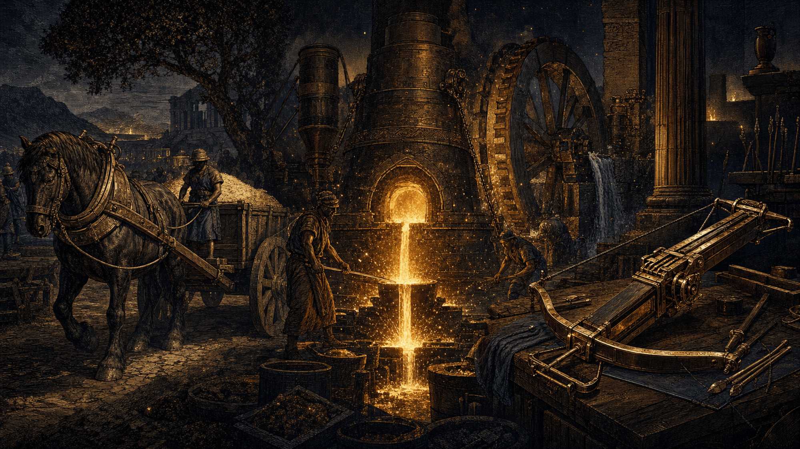
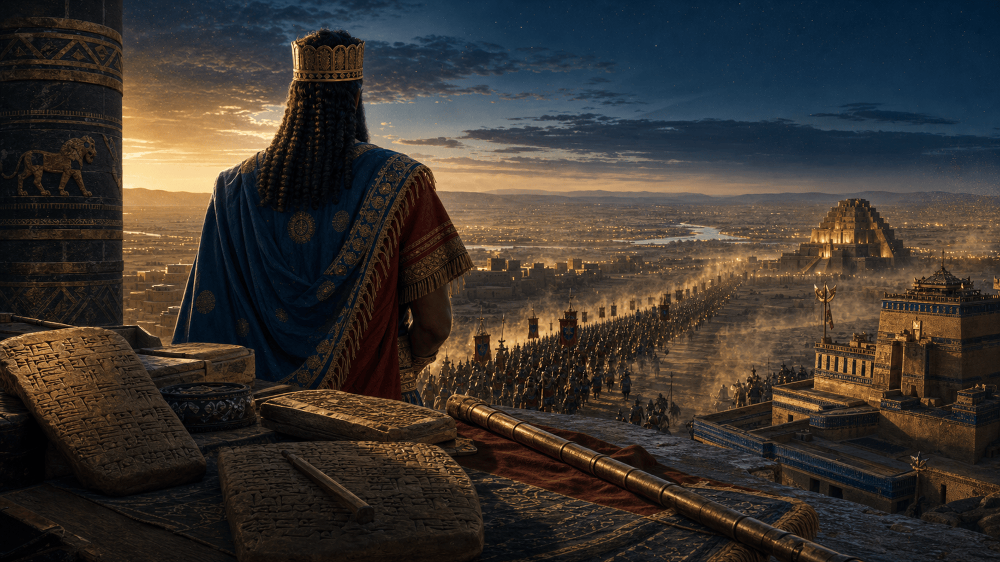
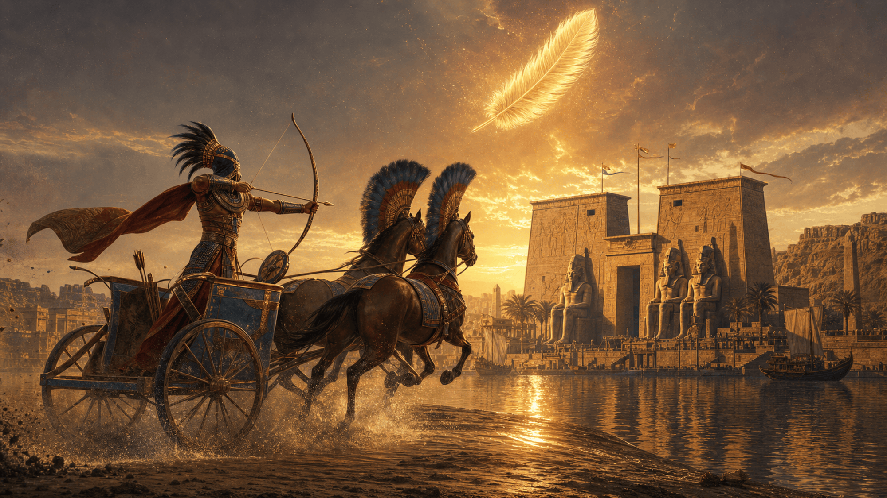
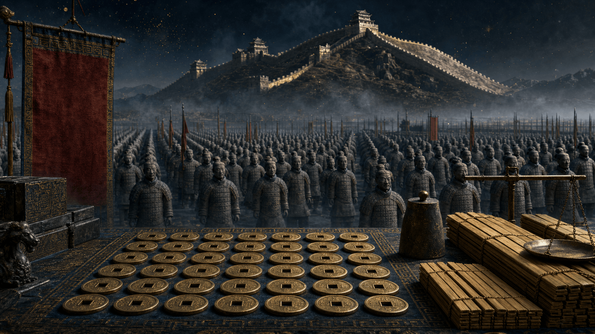

I. Introduction : Le « Logiciel » de la civilisation
- Concept : L'Empire n'est pas un lieu, c'est une machine administrative.
- Uruk : L'invention de l'écriture comme outil de comptabilité et premier "code" de contrôle.
Dossier XX · Histoire des empires
D'Uruk à la Chine des Qin, comment une poignée de cités est devenue une machine à gouverner la distance — en inventant la bureaucratie, l'acier, le harnais à collier et la première mondialisation. « Au-delà des murailles : Comment les empires ont inventé notre monde… »
« L'Empire n'est pas qu'une conquête de terres, c'est une conquête de la complexité. »
Le fil conducteur
Après les premières cités, voici l'étage du dessus : l'Empire. Non plus une ville, mais une machine qui doit faire obéir, nourrir et comprendre des peuples séparés par des centaines de kilomètres. Ce dossier suit cette histoire en trois temps — la rupture bureaucratique, le laboratoire des bâtisseurs, l'héritage invisible — puis la rejoue en fresque, d'Uruk à Akkad, de l'Égypte à la Chine des Qin, jusqu'à l'effondrement de l'Âge du Bronze. La transcription du live est conservée mot pour mot, et chaque fait a été vérifié.
Uruk & Eridu — l'écriture naît pour compter ; le « plan de base » de l'État.
Akkad — Sargon transforme la bureaucratie en machine à conquérir.
Égypte, Nouvel Empire — la Maât, le char léger : la machine sacrée.
L'effondrement — le « crash système » du monde hyper-connecté du Bronze.
Chine des Qin — la standardisation totale : la machine industrielle.
Pourquoi l'Empire est une rupture de nature, pas une simple grande ville : transcender l'identité locale, administrer la distance, uniformiser.
Trois « logiciels » de pouvoir : la machine administrative (Akkad), sacrée (Égypte) et industrielle (Qin) — et leurs fragilités.
Lire le mythe et la crise — les « Plaies d'Égypte », l'effondrement de 1200 — comme des rapports de système, sans nier les récits, en les traduisant.
Visualisation · Trois machines, trois empires
Trois mille ans en une ligne : d'Uruk à la Chine des Qin. Touchez un jalon pour le détail — dates de référence (chronologie moyenne / bornes ICS & conventions égyptologiques).
Échelle linéaire, ~3400 → 150 av. J.-C. Repères datés ; les « machines » (administrative / sacrée / industrielle) sont une grille de lecture du live, pas une typologie académique figée.
Sommaire
Introduction — L'Empire : Le souffle des bâtisseurs
Il y a peu, nous marchions ensemble dans les ruelles étroites des premières cités. Nous avons senti l'odeur des fours, le tumulte des marchés, et le poids des premières lois gravées dans l'argile. Mais l'histoire ne s'est jamais arrêtée à la porte des murailles. À un moment donné, ces cités ont commencé à regarder vers l'horizon, non plus comme des voisines, mais comme des territoires à unifier.
Imaginez : un roi, un scribe, et une armée au loin. Comment faire en sorte que, d'une frontière à l'autre, tout le monde obéisse, tout le monde mange, et tout le monde se comprenne ? C'est ici, dans ce vertige de l'immensité, que naît l'Empire.
Aujourd'hui, nous allons raconter cette histoire en trois temps. D'abord, nous observerons la rupture : ce moment précis où l'humanité cesse de vivre en autarcie pour inventer la bureaucratie et l'unité. Ensuite, nous entrerons dans le laboratoire des bâtisseurs : ce sont ces ingénieurs de l'ombre qui, pour soutenir le poids de l'Empire, vont forger l'acier, imaginer le harnais à collier et dompter la mécanique pour nourrir des millions de bouches. Enfin, nous verrons comment ces constructions titanesques ont fini par tisser la toile invisible du monde moderne, ces routes de la soie et ces échanges dont nous sommes, encore aujourd'hui, les héritiers directs.
L'Empire n'est pas qu'une conquête de terres, c'est une conquête de la complexité. Entrons ensemble dans ce récit. »


I — La définition narrative de l'Empire
« Avant d'aller plus loin, arrêtons-nous un instant sur ce mot : Empire. Qu'est-ce qui le sépare réellement de la cité dont nous parlions la dernière fois ? Ce n'est pas seulement une question de taille.
Un Empire, c'est une rupture de nature. C'est une structure politique qui, pour survivre, doit accomplir trois prouesses simultanées :
Mais pour comprendre ce saut dans l'inconnu, commençons par le début : le moment où la Cité devient trop étroite.
Partie I — Le Basculement
Partie I : Le Basculement — Au-delà des murailles
1. Le vertige du "Grand Tout" : La fin de l'autarcie
« Pour saisir le changement, il faut imaginer la peur et l'excitation des habitants de l'époque. Dans les premières cités, le pouvoir était un visage connu, celui du chef ou du grand prêtre, que l'on croisait au détour d'une ruelle. Mais soudain, l'horizon s'efface devant des conquêtes qui s'étendent sur des journées de marche entières.
Socialement, c'est un séisme. Le citoyen d'hier, qui vivait en autarcie avec ses voisins, est désormais intégré à un ensemble où il côtoie des gens qui parlent d'autres dialectes et prient d'autres dieux. C'est la naissance de la "citoyenneté élargie". Le pouvoir impérial, lui, doit inventer un nouveau langage : celui de l'uniformisation. Pour que l'Empire tienne, il faut que les poids, les mesures, et même la monnaie soient les mêmes partout. C'est la fin du localisme pour le début d'une ère où le pouvoir central commence à "voir" le territoire comme une carte à gérer. »
2. La bureaucratie : L'œil du souverain
« Mais comment diriger ce qui est trop vaste pour être vu ? C'est ici que le pouvoir invente sa "mémoire" : l'administration.
Pensez à ces scribes, dans le silence des bureaux impériaux, qui consignent les récoltes, le nombre d'hommes valides pour la conscription, les surplus de grain. Le pouvoir devient omniscient. Ce n'est pas juste du contrôle ; c'est une protection sociale inédite. En cas de sécheresse ou de famine locale, l'administration impériale peut déplacer des ressources depuis une province épargnée vers une autre. Le pouvoir ne demande plus seulement l'impôt, il devient, par nécessité, le garant de la survie collective.
C'est un contrat social qui change : on sacrifie une part de sa liberté locale pour la sécurité et la stabilité du système global. »
Le "disque dur" administratif
Le bambou comme "mémoire
Vous voyez, pour gérer un Empire, il ne suffit pas d'avoir des idées, il faut une mémoire. Dans les centres administratifs de la dynastie Qin ou Han, ce n'est pas le papier qui régnait, mais le bambou. On fendait cette plante en fines lamelles, on y gravait les décrets, les recensements de population et les instructions agricoles. Ces lamelles de bambou, comme les fameuses lattes de Tsinghua, sont les véritables "disques durs" de l'Antiquité. C'est grâce à la souplesse et à la résistance du bambou que l'administration impériale a pu archiver le savoir nécessaire pour structurer le quotidien des citoyens. »
Partie I — La preuve par la trace
3. La tension permanente : Pouvoir vs Réalité
« Pourtant, tout n'est pas rose. Le pouvoir impérial est une machine exigeante. Il impose une pression constante sur les populations : il faut bâtir des routes, lever des armées, entretenir des canaux. La tension entre les besoins de la capitale et la réalité de la vie paysanne devient le moteur des révoltes, mais aussi, paradoxalement, le moteur de l'ingéniosité. Car quand le pouvoir ordonne, mais que la technique manque, l'humain est forcé d'innover. C'est là que l'Histoire, avec un grand H, commence à s'écrire. »
A- La preuve par la trace : Quand l'Histoire s'écrit
Vous vous demandez peut-être : comment savons-nous tout cela ? Est-ce que ce sont des légendes ? Non. L'Empire a laissé derrière lui une trace indélébile : son écriture.
Si vous aviez pénétré dans les archives d'un centre administratif de la dynastie Han ou Qin, vous n'auriez pas trouvé de papier tel qu'on le connaît, mais des milliers de lamelles de bambou. Ces "lattes de Tsinghua", datées d'environ 300 av. J.-C., sont les ancêtres de nos disques durs. Ce sont sur ces supports que les scribes, dans un travail obsessionnel, consignaient les décrets de gouvernance, les instructions agricoles et le recensement des foyers.
C'est là que le récit prend tout son sens : ces manuscrits ne sont pas de simples textes, ce sont les preuves matérielles que l'Empire était une machine bureaucratique consciente. Lorsque nous lisons ces textes aujourd'hui, nous ne lisons pas de la fiction ; nous lisons les ordres de mission qui permettaient à un Empereur de gérer des centaines de milliers d'hommes et de ressources à des milliers de kilomètres de distance. L'administration, ce n'était pas juste de la paperasse, c'était la technologie qui empêchait l'Empire de s'effondrer sous son propre poids.
B. La preuve par les traités militaires (L'arbalète et la stratégie)
Pour l'arbalète et les techniques de guerre, nous possédons les "Sept Classiques militaires".
C. La preuve par les écrits philosophiques et techniques (Le magnétisme et la fonte)
Pour des innovations comme la boussole ou la gestion des métaux, les Chinois utilisaient des écrits pour théoriser ce qu'ils observaient.
D.La preuve par les "lattes de bambou" (L'administration et l'agriculture)
Avant le papier, les Chinois écrivaient sur des lamelles de bambou.
Mais cette structure, aussi impressionnante soit-elle, reste fragile face à la réalité du terrain. Administrer des milliers de kilomètres, nourrir des armées de conscrits et bâtir sur des terres hostiles demande plus que des lois. Cela demande des solutions techniques concrètes. Le pouvoir a besoin de réponses aux défis du quotidien. Et c'est là que le génie des inventeurs, comme ceux qui nous ont laissé ces traces incroyables, devient le véritable ciment de l'Empire.
Partie II — Le Laboratoire de l'Empire

Partie II : Le Laboratoire de l'Empire — L'ingéniosité comme survie
Nous avons vu comment l'Empire s'est structuré pour gérer l'immensité. Mais gouverner, c'est aussi résoudre des problèmes concrets. Quand le pouvoir impérial décide de nourrir des millions de bouches ou de protéger des milliers de kilomètres de frontières, il ne peut pas se contenter de décrets ; il doit innover. L'Empire devient alors un gigantesque laboratoire où l'ingéniosité humaine est poussée dans ses retranchements par une nécessité vitale.
1. La révolution agricole : Le harnais à collier
« Regardons d'abord ce qui remplit les greniers. Le harnais tel qu'il était utilisé ailleurs étranglait le cheval lors de l'effort, limitant sa force. L'ingénieur impérial, lui, a eu une intuition géniale : reporter l'effort sur les épaules de l'animal. En inventant le harnais à collier, on a permis à un seul cheval de tirer trois fois plus de charge. Ce n'est pas qu'une innovation technique, c'est une révolution sociale : c'est ce surplus de récoltes, transporté efficacement vers les capitales, qui permet à l'Empire de nourrir une population urbaine massive et de financer ses ambitions. »
A. Exemple du Harnais à collier : L'exploit de la logistique
« Imaginez la scène : avant cette invention, pour transporter le grain vers la capitale, les chevaux étaient harnachés de telle sorte que la sangle leur coupait la gorge dès qu'ils tiraient une charge trop lourde. C'était un gâchis de puissance immense. Puis, un ingénieur anonyme a déplacé la sangle sur les épaules de l'animal, utilisant un support rigide. D'un seul coup, ce n'est plus l'animal qui étouffe, mais l'animal qui déploie toute sa force de traction. Un seul cheval peut désormais déplacer 1 500 kg au lieu de 500 kg. C'est ce détail technique qui permet à l'Empire de ne plus avoir peur de la famine, car il peut enfin acheminer ses surplus agricoles sur des distances gigantesques. »
2. La révolution militaire : L'arbalète comme "démocratisation" de la puissance
« Ensuite, la sécurité. Dans les Royaumes Combattants, le chariot de guerre était l'arme des nobles, coûteuse et complexe. L'Empire, lui, avait besoin d'une armée de masse. L'invention de l'arbalète en bronze a tout changé. Grâce à sa gâchette mécanique, un soldat paysan pouvait, après un entraînement rapide, percer une armure à 200 mètres. C'est le récit d'une bascule : on ne dépend plus de l'élite guerrière, la puissance militaire devient accessible à tous les citoyens mobilisés par l'État. »
A. Exemple de l'Arbalète : La révolution du soldat paysan
« Dans les armées de l'époque, le combat était souvent réservé à une élite qui passait sa vie à s'entraîner avec l'arc. Mais l'Empire a besoin de masse, il a besoin de protéger des frontières qui s'étendent sur des milliers de kilomètres. L'arbalète est la réponse géniale à ce problème : son mécanisme à gâchette en bronze permet de stocker l'énergie de l'arc sans que le soldat n'ait à maintenir la tension avec ses bras. Résultat ? Un paysan, en quelques semaines d'entraînement, devient un tireur capable de percer une armure à 200 mètres. Ce n'est pas juste une arme, c'est la démocratisation de la force de frappe au service de la survie impériale. »
3. La révolution industrielle antique : La fonte et le fer
« Enfin, il y a la maîtrise du métal, le socle de toute cette puissance. Alors que le monde travaillait le fer à la forge manuelle, les techniciens impériaux ont dompté le feu en atteignant les 1 200°C nécessaires à la fonte du fer. Imaginez la puissance de ces forges ! Cette maîtrise a permis la production en série de socs de charrue en fonte, multipliant par cinq la productivité agricole. C'est ce passage à la production de masse qui fait de l'Empire une véritable machine industrielle, capable de transformer les paysages et de labourer des terres autrefois incultes. »
3. Exemple de la Fonte : La puissance du feu
« Pensez à l'audace des métallurgistes de l'Empire qui ont osé défier les limites de la chaleur : en utilisant des soufflets hydrauliques, ils ont réussi à injecter un flux d'air constant dans leurs fourneaux pour atteindre 1 200°C. À cette température, le fer devient liquide : c'est la fonte. Pour les gens de l'époque, c'est une magie technologique. Ils peuvent enfin couler des outils en série, comme des socs de charrue, et les envoyer par milliers dans les provinces. Un historien de cette période rapportait qu'un seul paysan équipé de ces nouveaux outils en fer pouvait labourer en une journée ce que cinq hommes faisaient auparavant avec des outils en bois. C'est ainsi qu'un Empire se nourrit lui-même : par l'industrie. »
Ces outils, nés dans le fracas des forges et le calcul des scribes, n'étaient pas destinés à rester confinés aux ateliers des artisans. Ils ont voyagé. En tissant ces routes pour exister et se protéger, l'Empire a, sans le savoir, dessiné les contours du monde globalisé que nous connaissons aujourd'hui.
Partie III — L'Héritage invisible
Partie III : L'Héritage invisible — Les racines de notre modernité
« Nous avons souvent tendance à regarder le passé comme un monde figé. Pourtant, l'Empire est un vecteur de transmission inouï. Comme le souligne le travail de recherche de Phantom, ces techniques ne sont pas restées prisonnières des frontières impériales.
La Route de la Soie, premier "Internet" antique
« Ces routes commerciales, tracées à l'origine pour le mouvement des troupes et le ravitaillement, sont devenues les artères de la planète. Dans les sacoches des marchands, on ne transportait pas seulement de la soie ou des épices, mais des idées, des savoir-faire et des techniques qui ont infusé tout le bassin méditerranéen. »
La standardisation comme héritage
« L'héritage le plus durable de l'Empire n'est peut-être pas une arme ou un outil, mais cette idée de standardisation. Le fait d'avoir des poids, des mesures et une monnaie commune — cette volonté impériale de rendre le monde lisible — est la base même de notre économie actuelle. L'Empire nous a légué le réflexe de l'unité. »
La technologie comme langage universel
« Enfin, comme l'a bien mis en lumière Phantom, les innovations comme la boussole, la laque ou les techniques médicales ont circulé au-delà des zones de conflit. L'Empire est tombé, les dynasties se sont éteintes, mais ces savoirs sont devenus des acquis universels de l'humanité. Nous sommes, encore aujourd'hui, les héritiers directs de cette volonté de dompter la complexité du monde. »
A. Exemple de la transmission : Les "voyageurs de savoir"
« Imaginez un marchand sur la Route de la Soie, il y a deux mille ans. Il ne transporte pas seulement des tissus précieux, il transporte des "paquets de technologie". C'est grâce à ces échanges que des techniques comme la fabrication du papier ou l'usage de la boussole — des innovations nées dans le creuset impérial — ont fini par atteindre l'Occident. Ces marchands étaient les premiers "nœuds de réseau" d'une mondialisation qui, déjà à l'époque, refusait les frontières. »
B. Exemple de la standardisation : Le langage commun
« Pourquoi, quand nous voyageons aujourd'hui, pouvons-nous utiliser une monnaie ou comprendre des mesures standardisées ? C'est un héritage direct. Les Empires, pour fonctionner, ont dû imposer des poids, des mesures et des monnaies uniques. Cette "lisibilité du monde" était une nécessité administrative pour gérer des territoires immenses. C'est ce réflexe d'unification que nous utilisons encore chaque jour, sans même nous en rendre compte. »
C. Exemple de l'innovation médicale : L'héritage silencieux
« Regardez les techniques médicales anciennes. Il a étébien mis en lumière que les savoirs accumulés dans les centres impériaux (l'herboristerie, les méthodes de diagnostic) n'ont pas été perdus à la chute des dynasties. Ils ont circulé, ont été traduits, adaptés et intégrés dans les pharmacopées de cultures très éloignées. C'est ça, l'héritage invisible : une accumulation de connaissances qui, bien après la disparition des bâtisseurs, continue de servir l'humanité. »
Une fresque historique
LES EMPIRES
…..Une fresque historique
Préambule : Le "Plan de base" (Uruk et Eridu)
« Avant de parler d'empires capables de couvrir des continents, il faut comprendre le "plan de base". Tout commence avec Uruk et Eridu. Ici, on invente les outils qui serviront pendant des millénaires :
I. Le Point de Départ : La Cité-État (Le berceau)
Ce qui se passe à Uruk il y a 5 000 ans ? C'est le plan de base. Plus tard, quand nous arriverons aux Empires Qin en Chine, nous verrons exactement la même logique de comptabilité, de murs et de standardisation, mais à une échelle décuplée.
A. Eridu et Uruk : Le "beta-test" de la civilisation
« Avant que l'Empire ne devienne une machine capable de gérer des milliers de kilomètres, il a dû faire ses gammes. Tout commence à Eridu, souvent considérée comme la plus ancienne cité, et Uruk, celle qui va pousser la logique jusqu'au bout. Ce sont ici les premiers lieux où l'humain expérimente ce que signifie "vivre ensemble" sous une autorité centrale. »
B. L'invention de la contrainte (Le récit de la bureaucratie)
« On a tendance à voir l'écriture cunéiforme comme un outil poétique. La réalité, mise en lumière par des chercheurs comme Jean-Jacques Glassner ou Mario Liverani, est beaucoup plus prosaïque : elle est née d'un besoin de comptabilité pure. À Uruk, le scribe ne grave pas des mythes sur ses tablettes, il compte des troupeaux et gère les rations de grains pour les travailleurs. C'est là que naît la bureaucratie : l'idée qu'un État doit tenir un registre de ses sujets pour mieux les gérer. »
C. Les murs : Une prison dorée ?
« On nous apprend que les murailles servaient à se protéger des "barbares". Mais, comme le souligne l'anthropologue James C. Scott dans Homo Domesticus, il faut regarder ces murs différemment. Pour les dirigeants d'Uruk, ces murailles avaient une double fonction : protéger, certes, mais aussi empêcher la population de fuir l'emprise fiscale. L'État, dès ses balbutiements, se révèle être une machine extractrice qui a besoin de retenir sa main-d'œuvre. »
D. La standardisation de l'humain : Les écuelles à bords biseautés
« Pour illustrer cette logique de "travail à la chaîne" antique, regardez les archéologues : ils trouvent par millions, à Uruk, des "écuelles à bords biseautés". Ce sont des poteries standardisées, produites en série, qui servaient à distribuer les rations aux travailleurs dépendants. Marc Van De Mieroop explique très bien ce basculement : on passe d'une société d'artisans libres à une société où l'État rationne la subsistance pour mieux contrôler la force de travail. »
Ce modèle de cité-État, aussi efficace soit-il, finit par exploser en plein vol : il est trop petit pour les ambitions des nouveaux chefs de guerre. C'est là qu'intervient Akkad, avec Sargon le Grand.
II — Le premier prototype

AKKAD
Phase 1 : L'invention du "Logiciel État" (Uruk et Eridu)
Phase 2 : La bascule — L'Empire comme outil de conquête (Akkad)
Phase 3 : Le Laboratoire — L'Empire contre la complexité (Dynasties chinoises et autres)
Phase 4 : L'héritage invisible — La fin du récit
L'épopée d'Akkad : Sargon et la rupture impériale
« Ymir, pour comprendre comment on est passé de la cité d'Uruk à quelque chose de radicalement plus vaste, il faut regarder un homme : Sargon le Grand.
Qui est Sargon ? C'est l'outsider qui brise les codes « Sargon, ce n'est pas un roi né dans le confort d'un palais héréditaire. La légende raconte qu'il est né d'une mère prêtresse, abandonné dans un panier sur le fleuve, un peu comme une figure mythique. Il gravit les échelons jusqu'à devenir l'échanson du roi de la cité de Kish. Mais ce qui est fascinant, Ymir, c'est qu'il ne se contente pas de servir un trône : il le renverse pour en créer un nouveau, à Akkad. »
Akkad, ce n'est pas seulement une nouvelle capitale. C'est le centre de commandement d'une ambition inédite. Jusque-là, la Mésopotamie était un jeu d'échecs où chaque cité-État jouait dans son coin, protégée par ses murs. Sargon, lui, décide que le plateau de jeu ne doit plus être limité par les remparts. Il crée la première armée permanente capable de projeter sa force bien au-delà de sa cité d'origine.
Ce qui rend Sargon unique, Ymir, ce n'est pas seulement la conquête militaire. C'est l'utilisation de l'administration. Il prend les outils que nous avons vus à Uruk — la comptabilité, le recensement, l'écrit — et il les transforme en outils de domination. Il installe des gouverneurs loyaux dans chaque cité conquise, il impose un poids et une mesure uniques, et il crée un langage administratif commun. »
En somme, Sargon est celui qui a compris que l'Empire, c'est avant tout une machine à unifier. Il a prouvé qu'on pouvait briser les identités locales des cités-États pour former un bloc uni par la loi et la force. Avec lui, l'histoire humaine bascule : on ne vit plus dans une ville, on appartient à un Empire. »
Et si tu vois ou je veux en venir Ymir, écoutes bien :
La figure de Sargon d'Akkad se situe exactement à la frontière entre l'histoire attestée et le récit mythologique, ce qui le rend passionnant à analyser pour ton live avec Ymir.
Voici comment démêler le vrai du faux pour ton audience :
Il ne faut pas choisir entre le conte et l'histoire. Sargon est bien un roi réel qui a construit un empire, mais il a utilisé les codes du "conte" de son époque pour assoir sa légitimité. C'est ce mélange de réalité politique et de mise en scène mythologique qui fait de lui le premier grand "communicant" de l'histoire impériale. »
Alors que pouvons-nous en déduire car il y a des sources historiques.
Pour mes recherches sur Sargon d'Akkad, voici les sources et documents qui permettent de distinguer l'homme historique du récit légendaire :
En résumé, pour préparer ce live, j'ai pu m'appuyer mon propos en expliquant que si la Liste royale et les inscriptions administratives sont les sources de l'homme d'État, les récits littéraires sont les sources de la "marque" impériale construite pour durer dans les mémoires. Ce qui m'a amuser c'est de voir comment on retrouve ce récit sous une autre forme de conte. Petit clin d'œil au passage à Moïse...
C'est parce que ce récit est un "topos", un schéma narratif que les civilisations du Proche-Orient utilisaient pour donner une dimension quasi divine aux grands leaders. Sargon est arrivé bien avant Moïse, et il est très probable que ce motif ait voyagé à travers les âges et les cultures de la région. En racontant cela, Sargon ne se contentait pas d'écrire son histoire, il entrait directement dans la mythologie universelle pour légitimer son pouvoir.
Ymir, après Sargon et son Empire d'Akkad qui a imposé le modèle de la force brute et de la bureaucratie, nous descendons le cours du temps vers une autre forme de puissance :
L'Égypte du Nouvel Empire.
III — La machine sacrée

La suite de l'épopée : L'Égypte du Nouvel Empire (env. 1550 – 1070 av. J.-C.)
1. Le passage à la centralisation absolue
« Si Akkad était une machine de conquête territoriale, l'Égypte, sous des pharaons comme Thoutmosis III ou Ramsès II, pousse la logique encore plus loin. Ici, le pouvoir ne repose pas seulement sur l'administration, il est sacralisé. Le Pharaon n'est pas juste un chef de guerre, il est l'incarnation même de l'ordre divin. Cette centralisation absolue permet une mobilisation des ressources — comme la construction des monuments ou la gestion du Nil — à une échelle que même les Akkadiens n'avaient pas imaginée. »
2. L'innovation qui change tout : La mobilité tactique
« Pour tenir un tel Empire, il ne suffit plus d'avoir des scribes, Ymir, il faut de la vitesse. L'innovation majeure ici, c'est le char de combat léger à roues à rayons. C'est un véritable bond technologique ! Avant, on combattait à pied ou avec des chariots lourds ; avec le char léger, l'armée égyptienne devient une force de projection rapide capable de dominer tout le Proche-Orient. »
3. Pourquoi c'est le "Point 2" de notre récit :
« Tu vois, Ymir, on ne se contente plus de conquérir, on domine. Avec le Nouvel Empire, on voit que l'Empire devient une structure si puissante qu'elle finit par se confondre avec la religion et l'identité même du peuple. C'est le passage de la "machine à conquérir" (Akkad) à la "machine à durer" (Égypte). »
I — L'Égypte du Nouvel Empire : Le Pharaon comme chef d'orchestre du monde
« Ymir, après la machine de guerre administrative d'Akkad, nous tournons nos regards vers le Nil. Si Sargon d'Akkad a inventé l'Empire, l'Égypte du Nouvel Empire, elle, a inventé l'Empire total. »
A. Le Pharaon, ou l'incarnation de l'État
« Imaginez, contrairement aux rois d'Akkad qui devaient sans cesse justifier leur pouvoir par la force, le Pharaon du Nouvel Empire, lui, ne règne pas seulement sur des terres, il règne sur l'ordre du monde lui-même, la Maât. C'est un changement de logiciel : l'obéissance ne vient plus seulement de la peur du soldat, mais d'une adhésion religieuse profonde. Le Pharaon est le garant de la crue du Nil, le lien vivant entre le ciel et la terre. Quand le Pharaon ordonne, c'est l'Univers qui se met en marche. »
B. Le choc technologique : La cavalerie de l'âge du bronze
« Mais derrière cette façade sacrée, ne nous y trompons pas : c'est une machinerie ultra-moderne. L'innovation qui fait basculer l'Égypte dans la cour des grands empires, c'est le char de combat léger, c'est le "tank" de l'Antiquité. Grâce à ses roues à rayons, il est rapide, maniable, mortel. Les Égyptiens l'ont perfectionné pour en faire une arme de projection capable de frapper à des centaines de kilomètres de leur base. C'est avec cette technologie qu'ils vont transformer le bassin méditerranéen en leur zone d'influence personnelle. »
C. Le laboratoire égyptien : Gérer le fleuve, gérer le monde
« Ce qui fascine dans ce récit, c'est que l'Égypte gère son Empire comme elle gère son fleuve : tout doit être prévisible, tout doit être mesuré. Chaque année, les scribes recensent le grain, prévoient les récoltes et dirigent la main-d'œuvre pour les grands travaux. Ils ont perfectionné cette bureaucratie née à Uruk pour en faire une horlogerie précise, capable de nourrir des armées entières en campagne. »
D. La question pour le collectif
« Ymir, je me demande souvent : est-ce que cette fusion entre la religion et la haute technologie militaire n'est pas, au fond, le secret de la longévité de l'Égypte ? Contrairement à l'Empire d'Akkad qui s'est fragmenté rapidement, l'Égypte a su créer une structure si puissante qu'elle a dicté le rythme du monde pendant des siècles. »
2. Le Pharaon emblématique : Ramsès II ("Le Grand")
Bien qu'il y ait eu de nombreux grands bâtisseurs et guerriers (comme Thoutmosis III ou Ahmosis), Ramsès II est le personnage idéal pour illustrer cette "machine impériale" égyptienne.
3. Définition de la Maât : L'ordre du monde
On peut expliquer la Maât, non pas comme une simple "loi", mais comme le logiciel de maintenance de l'Empire.
4. Sources sur la puissance militaire (Le "Laboratoire")
Pour appuyer nos propos sur le char de combat (le "tank" de l'Antiquité) et l'organisation militaire, tu peux citer :
La Maât, c'est un peu comme notre "système d'exploitation" social. Si les fichiers sont corrompus (Isfet), le système plante. Le Pharaon, en tant qu'administrateur en chef, devait corriger les erreurs en temps réel pour que l'Empire, cette immense machine, continue de fonctionner parfaitement. »
Akkad laïque, Égypte sacrée — le lien avec les religions
Nous avions évoquer ensemble que nous ferions des liens avec les religions et nous avons pu en faire sans trop les développer. S'intéresser à l'histoire permets d'avoir une vision plus claire en nous basant sur les faits et les preuves.C'est un travail et une analyse que nous devrions tous faire. J'ai essayé de faire un lien et là c'était plus difficile.
Et c'est tout à fait normal d'avoir eu du mal à trouver un lien "religieux" direct pour Akkad, car contrairement à l'Égypte, le système akkadien est profondément laïque et pragmatique.
La grande différence de "logiciel" :
Comment expliquer le "faux" lien religieux d'Akkad
« Si on cherche une justification divine à Akkad, on risque d'être déçu. Sargon ne cherche pas à être un dieu vivant comme le Pharaon. Il utilise la religion, mais de manière très "stratégique" :
Là où le Pharaon est l'esclave de la Maât (il doit servir l'ordre divin), Sargon, lui, fait du temple un outil au service de l'État. C'est le passage d'un Empire théocratique (Égypte) à un Empire technocratique (Akkad). Sargon est le premier à avoir compris que le temple est une administration comme une autre, et qu'il faut la prendre en main pour faire tourner la machine. »
Et c'est là que nous vous emmenons vers une autre contrée lointaine..Nous avons vu comment, en Égypte, l'Empire s'est appuyé sur le sacré pour maintenir l'ordre. Mais cette approche a une limite : elle dépend de la figure du souverain. La Chine des Qin va aller plus loin : elle va retirer l'humain de l'équation pour ne laisser que le mécanisme, créant ainsi la première véritable "machine administrative" de l'histoire, froide, précise et implacable.
C'est la suite logique et la plus spectaculaire pour ton récit. Si Akkad était le "prototype" et l'Égypte la "machine sacrée", la Chine des Qin est l'étape où le "logiciel" impérial atteint sa version 2.0, totalement automatisée.
V — La machine industrielle

L'Empire Qin : La Standardisation Totale (221 av. J.-C.)
« Si on veut comprendre ce que signifie réellement "l'Empire", il faut regarder la Chine des Qin. Après avoir observé l'efficacité d'Akkad et la stabilité égyptienne, les Chinois vont pousser la logique impériale jusqu'à son paroxysme : la standardisation intégrale. »
1.Le passage à la "Machine Administrative" froide
« Avec Qin Shi Huang, on oublie le Pharaon-Dieu. Ici, le souverain n'est plus le lien avec les dieux, il est le chef d'une machine. Il met en place le Légisme : une philosophie politique qui dit que l'homme est naturellement indiscipliné, et que seule une loi stricte, égale pour tous, peut faire fonctionner la société. C'est la fin du "flou" : chaque citoyen a une place, une fonction et une obligation précise. »
2. Le choc technologique : La "Standardisation"
« C'est là que ça devient fascinant pour nous. Ils ne se contentent pas de conquérir, ils "formatent" le territoire :
3. Le Laboratoire : Le paysan-soldat
« Et c'est là que nous allons faire appel à votre mémoire, vous vous souvenez de l'arbalète que nous mentionnions tout à l'heure ? C'est sous les Qin qu'elle devient une arme de destruction massive, produite en série avec des pièces interchangeables. C'est la première véritable industrialisation de la guerre. Le paysan devient une pièce de la machine, interchangeable et efficace. »
Le récit : Des racines à la machine (La montée des Qin)
« Pour comprendre les Qin, il faut voir leur histoire comme un arbre qui a fini par étouffer la forêt.
1. Les racines : Les gardiens des chevaux
« Tout commence bien avant l'Empire, avec une lignée de seigneurs, les Qin, qui étaient à l'origine de simples éleveurs de chevaux pour les rois Zhou. Ils étaient en marge, aux frontières sauvages de l'Ouest. C'est leur rôle de "gardiens" qui forge leur caractère : ils sont robustes, pragmatiques et habitués à la survie. Contrairement aux grandes familles installées dans le confort des cités, les Qin, eux, ont dû bâtir leur force à la dure. »
2. Le tronc : L'ascension par le mérite (Le Légisme)
« Imaginez cet arbre qui pousse. Les Qin n'ont pas cherché à séduire par la religion ou par des alliances matrimoniales complexes. Ils ont tout misé sur un "logiciel" radical, le Légisme. Leur arbre généalogique ne se base plus sur le sang ou la noblesse, mais sur la performance :
3. La cime : Qin Shi Huang, l'homme qui coupe l'arbre
« Et puis arrive Qin Shi Huang. Lui, c'est celui qui, au sommet de cet arbre, décide que la forêt doit disparaître pour ne laisser que son propre système. Il ne se contente pas de dominer, il veut devenir la racine unique de tout ce qui pousse sur le territoire. Il brise les anciens clans, il déplace les populations, il unifie tout. L'arbre généalogique de la famille Qin devient le squelette de toute la société chinoise. »
« Retenez bien ceci : alors que les autres royaumes étaient encore bloqués dans une logique de "famille" et de tradition, les Qin, eux, ont transformé leur propre structure familiale en un système administratif total. Ils n'ont pas juste conquis la Chine, ils l'ont "reformatée" pour qu'elle fonctionne comme une extension de leur propre gestion. »
Pour étayer le récit sur l'ascension des Qin et le passage d'une lignée seigneuriale à une machine bureaucratique totalisante, voici les sources historiques incontournables.
1. Les sources textuelles antiques (Le "cœur" du récit)
2. La philosophie politique (Le "logiciel" de la machine)
3. Les preuves archéologiques (La preuve de la standardisation)
4. Analyses contemporaines
Pour ne pas parler dans le vide, nous nous appuyons sur deux piliers :
Lecture rationaliste
Evidemment, nous nous sommes posés une petite question...Tu vois laquelle ?
Sur la chute des Empires surtout en Egypte, pouvons nous faire un petit lien avec les plaies d'Égypte ?
Et bien.....
1. La réponse courte : nous avons "tort" scientifiquement, mais "raison" historiquement
2. Le décodage rationaliste (La "Maât" en péril)
En tant que petits chercheurs sur les systèmes d'empire, on peu t vous expliquer que les plaies d'Égypte sont une allégorie de l'effondrement de la Maât.
Quand l'ordre social, écologique et politique s'effondre (ce qu'on appelle un effondrement systémique), tout semble "maudit" :
3. Le lien avec le sujet (L'effondrement de 1200 av. J.-C.)
« Ymir, les récits des "plaies" ne sont pas des événements surnaturels, ce sont des comptes-rendus traumatiques. À la fin de l'Âge du Bronze, l'Égypte a réellement subi des famines, des invasions (les Peuples de la Mer), des crises économiques et des épidémies. Le récit biblique est la cristallisation, dans la mémoire des peuples, de cette période où la Maât — l'ordre du monde — a littéralement volé en éclats. »
4. Comment le dire, l'expliquer...(Le ton Contre-Intox)
« D'un point de vue, rationnel, mais respectueux envers les croyants ne voyons pas les plaies d'Égypte comme un miracle ou une fable, mais comme un rapport de crise antique. Quand un empire aussi puissant que celui de Ramsès s'effondre, les gens ne disent pas "il y a eu un dérèglement systémique des routes commerciales", ils disent "le monde a été puni". C'est notre rôle de rationalistes de voir derrière le récit religieux la réalité d'un système complexe qui s'effondre sous son propre poids. »
Et si certains s'interroge, nous resterons sur cette ligne : on ne nies pas le récit, on essaye de le traduire. On remplace juste le "divin" par le "systémique".
C'est une démarche très puissante et importante pour L'Empire Contre-Intox.
Ce récit des "plaies" est en réalité la mémoire traumatique d'un système qui s'effondre. Au lieu de voir ici un miracle, il faut y voir le témoignage brut d'une population qui assiste, impuissante, à la fin de la Maât : quand le réseau mondial de l'Âge du Bronze explose, ce n'est pas la colère des dieux qui frappe, c'est la mécanique de la civilisation qui se grippe.
Nous insistons sur le fait qu'il s'agit d'une interprétation rationaliste pour éviter que vous ne ne pensize que c'est une théorie académique unanime sur la datation précise des événements.
IV — La première mondialisation
Nous avons parlé de la machine administrative de Sargon et de la puissance des Pharaons, mais il ne faut pas oublier un détail crucial : ces empires n'existaient pas dans une bulle. Ils étaient les maillons d'un immense réseau de commerce mondial où, si le métal ne circulait pas, toute la civilisation s'arrêtait : bienvenue dans le monde ultra-connecté, mais dangereusement fragile, de l'Âge du Bronze.
L'AGE DE BRONZE
…..La première ère de la mondialisation.
Avant de vous présenter ce chapitre, nous faisons une petite mise au point.Nous faisons attention simplement à ne pas laisser penser que le réseau était "moderne" au sens actuel. Il était fondé sur des élites royales (diplomatie de palais) et non sur une économie de marché libre.
1. Le "Bronze" n'est pas qu'un métal, c'est un réseau
Le bronze est un alliage de cuivre et d'étain. Or, ces deux métaux ne se trouvent que rarement au même endroit.
2. Le système de "Diplomatie des Grands Rois"
C'est fascinant car, pour la première fois, on voit des empires (Égypte, Hittites, Babylone, Mycéniens) communiquer officiellement.
3. L'effondrement : Le "Bug" du système (1200 av. J.-C.)
C'est le moment le plus dramatique de l'Âge du Bronze, parfait pour un live :
Petit clin d'œil scientifique
1. Le symbole chimique (La précision scientifique)
Le bronze n'est pas un élément chimique (comme le fer Fe ou l'or Au), c'est un alliage. Il n'a donc pas de symbole propre dans le tableau périodique.
« Le bronze, c'est la preuve que l'homme a appris à "hacker" la nature. Ce n'est pas un métal pur, c'est un mélange de deux éléments : Le cuivre (Cu) et l'étain (Sn). Le symbole du bronze, c'est donc l'union technique de ces deux-là : Cu + Sn = Bronze. C'est le premier matériau "synthétique" de l'histoire, créé par l'humain pour gagner en dureté et en performance. »
Le bronze n'a pas de symbole propre : c'est un alliage, pas un élément. On allie le cuivre (, ductile mais mou) à l'étain () — typiquement ~90 % Cu / ~10 % Sn — pour obtenir un métal bien plus dur. Tout le drame de l'Âge du Bronze tient dans ce « + » : les deux ingrédients ne se trouvent presque jamais au même endroit, d'où la nécessité d'un réseau commercial à l'échelle d'un continent.
2. Le "symbole" historique (La valeur culturelle)
Si vous cherchez un symbole pour visualiser
Utiliser Cu + Sn est un super "clin d'œil" à notre démarche rationaliste : on transforme un sujet historique en une équation simple et compréhensible. Ça montre que, derrière le mythe, il y a de la chimie et de la logistique.
1. Les sources archéologiques : La preuve du réseau
2. Les sources d'analyse systémique (La "vision rationaliste")
3. La science des matériaux
Si vous vous demandez d'où on tire ces faits, ce n'est pas de la spéculation. L'épave d'Uluburun, découverte au fond de la mer, est une "capsule temporelle" : elle prouve qu'un navire pouvait transporter à la fois du cuivre de Chypre et de l'étain d'Orient. C'est la confirmation archéologique que sans ce réseau mondial, les empires de l'Âge du Bronze n'auraient jamais pu construire leurs chars ni leurs armures. Comme l'explique très bien l'historien Eric Cline, cette interconnexion était leur plus grande force, mais aussi leur plus grande faiblesse.
VI — Conclusion & transition
Conclusion
En résumé, Ymir, nous avons vu que l'Empire est une machine : une machine administrative à Akkad, une machine sacrée en Égypte, et une machine industrielle en Chine. Mais à chaque fois, cette machine finit par s'essouffler sous le poids de sa propre rigidité.
Nous avons donc compris comment les structures tombent, mais une question reste en suspens : qu'est-ce qui arrive quand, au lieu de suivre un chef ou une bureaucratie, on décide de mettre la citoyenneté au centre du jeu ?
C'est précisément ce que nous allons explorer lors de notre prochain live. Nous allons confronter deux modèles qui ont tout changé : l'Égypte des Pharaons, cette puissance colossale, immuable et hiérarchisée, face à la Grèce antique, ce laboratoire bruyant, instable et démocratique.
Égypte versus Grèce : c'est le choc entre la stabilité éternelle et l'expérimentation politique. On se retrouve très vite pour voir laquelle de ces deux civilisations a réellement façonné notre monde moderne. Merci à tous d'avoir suivi ce décryptage avec L'Empire Contre-Intox !
L'appareil critique
Ce dossier conserve la transcription du live mot pour mot. En parallèle, chaque affirmation et chaque chiffre ont été recoupés par des agents de recherche, puis consignés dans le Dossier « Les Sources » de l'Empire — avec verdict (confirmé, à nuancer, débattu) et source autoritative.
L'essentiel du récit est solide : Sargon et Akkad, la Maât et le char égyptien, la standardisation Qin, le réseau du bronze et son effondrement de 1200 av. J.-C. Les encadrés « Anti-intox » de cette page rassemblent les nuances importantes — sans jamais toucher au texte transcrit :
Ce dossier conserve mot pour mot la transcription du live. Des écuelles à bords biseautés d'Uruk aux tablettes de Shuihudi, du harnais à collier au réseau du bronze, une même idée traverse tout : pour faire tenir ensemble des inconnus séparés par la distance, l'humanité a écrit du « code » — la comptabilité, la loi, la standardisation, le mythe. Ce logiciel, on ne l'a jamais désinstallé. Le travail de l'Empire Contre-Intox commence là : remplacer, derrière le récit, le « divin » par le « systémique » — sans nier le récit, en le traduisant.
Collectif
Un collectif pour remettre du contexte, de la méthode et du sens critique dans la mémoire collective. Ce dossier prolonge le live en donnant au public une version lisible, structurée et partageable de l'histoire des premiers empires.
Dossier réalisé parLalie & Ymiravec l'aide précieuse de Phantom
Lalie, Ymir & l'aide précieuse de Phantom
Veritas omnia vincit